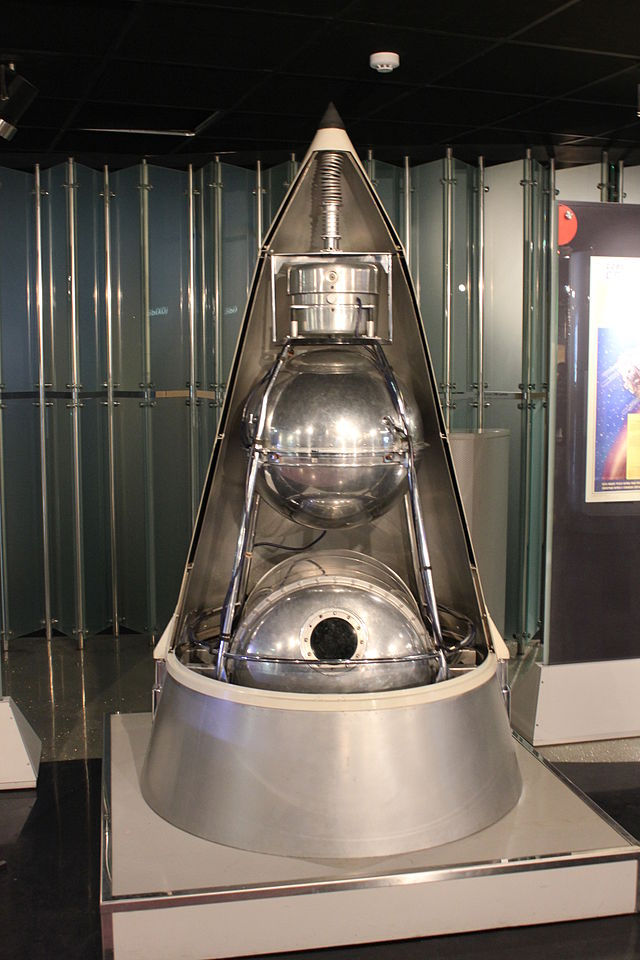
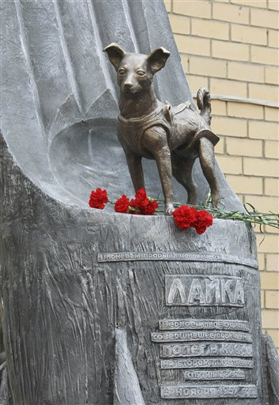

.jpg) Dnia 3 listopada 1957 roku Łajka wyleciała w swoją historyczną misję.
W momencie startu była jedynie czternastym psem w całej historii,
który znalazł się w kosmosie. Misja miała trwać kilka dni, ale
niestety nie przewidziano, że Łajka nie przeżyje tej podróży.
Ciekawostka: Łajka stała się symbolem dla wielu, a jej poświęcenie
przyczyniło się do dalszych badań i misji załogowych. Jej historia
przypomina, jak wiele kosztowała nas eksploracja kosmosu.
Dnia 3 listopada 1957 roku Łajka wyleciała w swoją historyczną misję.
W momencie startu była jedynie czternastym psem w całej historii,
który znalazł się w kosmosie. Misja miała trwać kilka dni, ale
niestety nie przewidziano, że Łajka nie przeżyje tej podróży.
Ciekawostka: Łajka stała się symbolem dla wielu, a jej poświęcenie
przyczyniło się do dalszych badań i misji załogowych. Jej historia
przypomina, jak wiele kosztowała nas eksploracja kosmosu.
 Po zakończeniu misji Sputnik 2 przestał działać 4-7 dni po starcie, a Łajka zmarła z powodu przegrzania i stresu. Dopiero po latach uznano ją za bohaterkę, a jej misja stała się punktem zwrotnym w badaniach nad życiem w kosmosie.
Wspomnienie Łajki
Choć Łajka nie wróciła na Ziemię, jej poświęcenie miało znaczenie dla
przyszłości astronautyki. W 2008 roku, w 50. rocznicę jej lotu, w
Moskwie odsłonięto pomnik na cześć tego dzielnego psa. Jej historia
przypomina nam o odpowiedzialności, jaką mamy wobec wszystkich istot
żywych, które biorą udział w naszym dążeniu do poznawania kosmosu.
